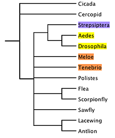
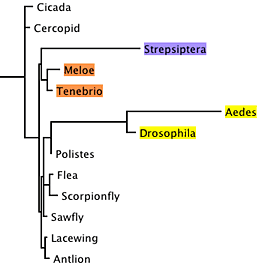
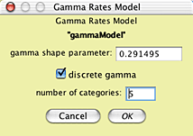
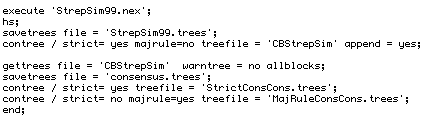

Are strepsipterans related to flies? Exploring long branch attraction
David R. Maddison
The question
Strepsiptera,
sometimes known as twisted-wing parasites, is an enigmatic group
of insects. They are parasites of other insects. The males have
only one pair of wings and odd raspberry-like eyes and
lobed antennae. Females are wingless, and in most species never
leave the host. These insects have traditionally been considered
related to beetles,
although that placement is supported by little evidence. Recently,
molecular data have suggested that they may instead be related
to true, two-winged flies (Diptera).
For example, parsimony analysis of a small data
matrix of 18S ribosomal DNA yields (Carmean and Crespi, 1995)
a phylogeny in which Strepisptera is placed as sister group of
Diptera (in yellow) rather than Coleoptera (in orange):

This is the strict consensus tree of 27 most-parsimonious
trees.
However, examining the relative branch lengths
for any one of the trees, it becomes evident that the branches
for Diptera and Strepsiptera are unusually long:

This raised the possibility that the association
between Strepsiptera and Diptera in these trees was an artifact,
caused by long-branch attraction (Felsenstein, 1978; Hendy and
Penny, 1989).
Huelsenbeck (1997) set to determine if the relationship
seen in this analysis of Strepsiptera with Diptera could be accounted
for by long-branch attraction. To do this, he
conducted
a simulation
study. We won't reproduce his whole study here, just one part
of his Figure 2.
We will ask only one simple question: If strepsipterans
are indeed related to beetles, would our observation that parsimony
analysis yields a phylogeny with strepsipterans related to
Diptera be unexpected? If we can show that it is unexpected,
we can reject
the notion that strepsipterans are related to beetles. If,
however, inference of strepsipterans as related to Diptera is
expected even if they are actually related to beetles, then we
cannot so readily reject the traditional view.
A simulation study
To conduct a simulation study, we first need a
model tree. We can use a tree inferred using maximum likelihood,
which places strepsipterans with beetles:

Model Tree
The branch lengths of this tree were inferred using
maximum likelihood. We also need a full model of DNA sequence
evolution (which can also be inferred using maximum likelihood).
With this model in hand, we can simulated the evolution
of 18S rDNA up the branches of this phylogeny, to yield a simulated
matrix. We can then infer the phylogeny for this simulated matrix
using parsimony, and see where Strepsiptera falls. Repeating
this multiple times will give us an idea about the expected placement
of Strepsiptera using parsimony inference presuming the model
tree shown above.
Conducting the simulations
To conduct the simulations, in Mesquite open the
example file "study002.nex", in the
folder Mesquite_Folder/docs/mesquite/studies/study002/. This
file contains the 13-taxa data matrix from Carmean and Crespi
(1995) as modified by Huelsenbeck (1977), as well as the model
tree shown above. The model tree will appear in a window when
you open the file:

In addition, a model of character evolution has
been entered into this file, with parameters obtained from maximum
likelihood inference using PAUP*4 (Swofford, 2003). These were
inferred on the model tree using the observed 18S rDNA data.
You can see the model by choosing Characters>Edit
Character Model>Huelsenbeck Model:

This model uses the empirical state frequencies
as present in the original 18S rDNA matrix, a model of character
rate variation called "gammaModel", and a rate matrix model called
"HKY85". You can see the nature of gammaModel by touching on
the Edit button near its listing:

and the nature of the HKY85 model by touching on
its Edit button:

With the model fully established, we can now conduct
the simulation study. To do this, we want to ask Mesquite to
create many simulated matrices, each evolved according to the
model. We also want to create a script ("batch file")
that will tell a tree-inference program (we will use PAUP*, but
another program such as NONA could be used) to find the most
parsimonious trees for each of the matrices, and summarize the
results. Mesquite's Batch Architect package contains the tools
to automate this process.
Choose Analysis>Batch
Architect > Export
Matrices & Batch
Files... In the
first dialog box that appears choose Simulated Matrices on
Current Tree, then Evolve DNA Characters, then Huelsenbeck
Model. You will be presented with the Export Matrices & Batch
Files dialog box, in which you can enter the base name for
the matrix files to be created and the number of matrices (100
is a good start).

The batch file template to be used is the one called
"Basic PAUP tree search". This template builds a PAUP* command
file that will tell PAUP to execute and analyze each matrix in
turn, and then, and the end, harvest the results and calculate
a majority-rule consensus tree.
After pressing OK, you will be asked for a location
to save the 100 matrices. It is recommended that you have an
empty folder available into which they can be saved to avoid
cluttering up another folder with many files. You will be asked
one last question: the number of characters to be evolved in
each matrix. As we want the simulation model to be as similar
as possible to reality, we will chose to evolve the same number
of characters as is present in the observed matrix, which is
770.
Mesquite will now simulate the matrices, and produce
a batch file called "paupCommands.nex". This file consists of
commands for PAUP*. The start of the file looks something like
this:

After some initial setup, PAUP* is to execute the
first simulated matrix file ("StrepSim0.nex"), do a
heuristic search (which, by default, should be for most-parsmonious
trees),
and then save the results to a tree file. It then saves the strict
consensus
tree
of the
most-parsimonious
trees
to a different tree file. It repeats this process for the next
matrix, StrepSim1.nex, and the next one, StrepSim2.nex, and so
on, until it gets to StrepSim99.nex, as requested near the end
of
the file:

After processing StrepSim99.nex, it reads in the
tree file containing the accumulated consensus trees, and calculates
both a strict consensus tree of the results from the 100 replicates,
as well as the majority rule consensus tree of the replicate's
results.
To ask PAUP* to do this analysis, open PAUP* and
ask it to execute the file paupCommands.nex.
Interpreting the results
After PAUP* finished executing paupCommands.nex, near the bottom
of PAUP*'s main window will be the majority rule consensus tree
of the strict
consensus
trees
from
each
of the 100 replicates. It will look something like this:

The actual numbers may differ, but they should be similar to
those shown.
The "73" on the Strepsiptera + Aedes + Drosophila
branch indicates that in 73 of the simulated matrices, the most
parsimonious trees
had Strepsiptera with Diptera, even though the model tree on
which the data were simulated had Strepsiptera with beetles.
This indicates that the inferred placement of strepsipterans
with dipterans with the observed data might be the result of
an inference artifact, as inferring strepsipterans with Diptera
is expected even if they truly are with beetles.
Summary
Simulations were done to see what trees we would expect from
a phylogeny inference under a particular model tree. The steps
in the study are:
- The branch lengths of the model tree are inferred using maximum
likelihood in PAUP*.
- Values of parameters of a model of sequence evolution (gamma
shape parameter, transition/transversion rate) are inferred
using maximum likelihood in PAUP* on the model tree using the
observed DNA sequences.
- The data matrix is opened in Mesquite, along with the model
tree. Submodels and a model of character evolution are created
within Mesquite to match those inferred.
- Mesquite's Batch Architect is used to automate the process
of simulating the evolution of multiple (100 or more) data matrices
under this model, using Mesquite's Genesis package. Batch Architect
also builds a command file for PAUP* and an instruction file
for Mesquite so that it can interpret the results of the PAUP*
analyses.
- The command file is executed in PAUP*, telling PAUP* to search
for the shortest trees for each
of the simulated matrices, accumulating the consensus trees
for each matrix in a tree file. PAUP* is also instructed to
calculate a majority-rule consensus tree of the results of
each analysis.
- The majority-rule consensus tree is examined in PAUP* to
see what trees are expected to be inferred under these conditions.
References
Carmean, D., and B. Crespi. 1995. Do long branches attract flies?
Nature, 373:666.
Felsenstein, J. 1978. Cases in which parsimony
and compatibility methods
will
be positively
misleading.
Systematic
Zoology, 27,
401-410.
Hendy, M.D., and Penny, D. 1989. A framework for the quantitative
study of evolutionary trees. Systematic Zoology, 38, 297-309.
Huelsenbeck, J.P. 1997. Is the Felsenstein zone a fly trap?
Systematic Biology, 46, 69-74.
Swofford, D. L. 2003. PAUP*. Phylogenetic Analysis Using Parsimony
(*and Other Methods). Version 4 beta 10. Sinauer Associates,
Sunderland, Massachusetts.
Citation for this page
Maddison, D.R. 2004. Are strepsipterans related
to flies? Exploring long branch attraction. Study 2 in
Mesquite: a modular system for evolutionary analysis, version
2.014,
http://mesquiteproject.org.